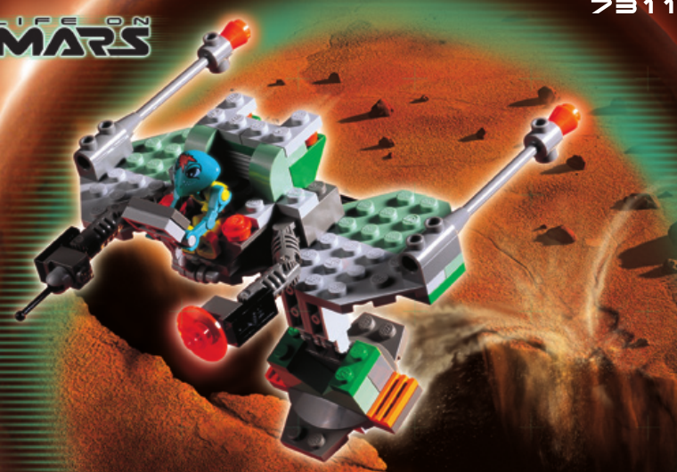
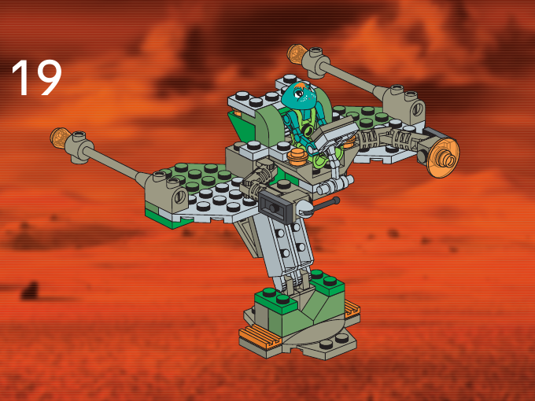

Production Design Target
ОФІЦІЙНИЙ LEGO 7311 · без змін

Основний завершений виглядОфіційний LEGO · обкладинка інструкції

Друга конфігурація з інструкціїКрок 19 · одна опора
Зберегти оригінальний силует, відкриту конструкцію, фігурку, кольори та шарнірні вузли. Друга конфігурація підтверджена LEGO; окремої підставки чи нової трансформаційної механіки цей пакет не додає.